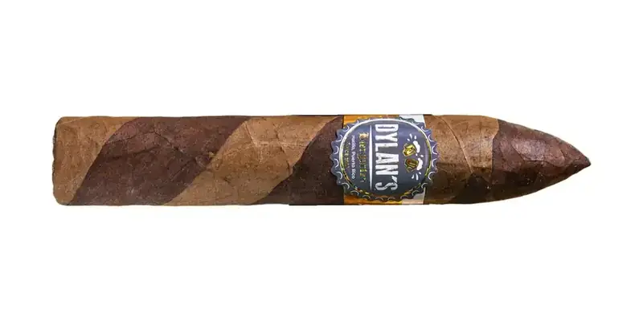

Dylan's Barber Pole
By El Club del Turro · Río Grande, Puerto Rico
Nicaraguan binder; Corojo filler from Finca Neo Jibairo. A collaboration with Dylan's Biergarten. Strength on its spec sheet: medium to full.
- Wrapper: Barber Pole: Habano Ecuador and Connecticut
- Strength: Full
- Vitolas: Torpedo 5.5" x 52
Sources: 1
See Dylan's Barber Pole in the app, rate it and save it to Mi Hoja.